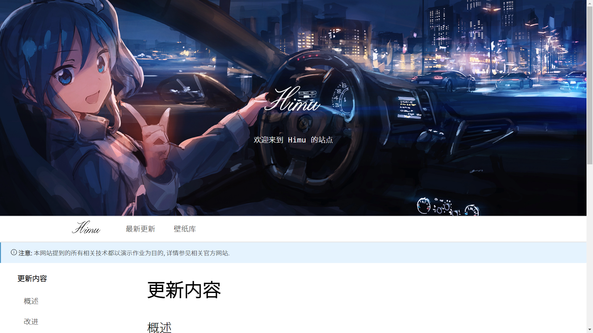
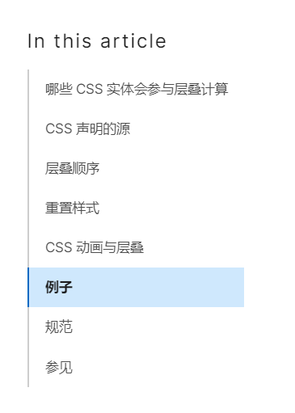

更新内容
概述
本次更新主要对 Himu 进行了可用性, 兼容性的方面问题进行了改进, 同时也增加了二级导航, 垂直文档导航等功能.
改进
本次更新主要对布局和兼容性进行了大规模的改进, 现在, 得益于外部字体(@font-face)的加载, 无论是等宽字体, 等线文本, 还有艺术字体在所有平台下都可以得到几乎一样的字体效果
现在, 更重要的是, 本次更新最主要在于 flex 布局的大量应用, 以及简单的自适应布局应用, 本次更新也为移动端带来了好处 --- 现在移动端会自适应页面, 试一试在手机上打开它!
注意 & 已知问题
注意: 如果您的设备难以访问 Github 或者访问速度较慢, 外部字体以及大量图片可能无法正常加载.
下图可以看到本网站的理想状态.

使用说明 ~ 介绍
还未完成的部分
我们期望实现一些较大型网站常见的效果, 例如文档右侧的索引栏

打开开发工具可以看到我们网站的 warning 极多, 后续将会逐步修复以避免隐患.
自适应式布局需要进一步完善, 移动端部分功能不可用.
这并不是一个完整的网站, 许多超链接是不可用的
关于 "Himu"
样式借鉴
本网站主要参考了 mdn 的网站设计, 参见MDN 网站
本网站中文字体为 NotoSans (等线体), 等宽字体为 FiraCode, 艺术字体则为 Balymond.